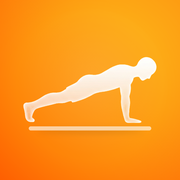

PushFormPushForm ist eine App zum Zählen und Verfolgen von Liegestützen. Datenschutz ist uns wichtig: Deine Trainings-, Körper- und Kameradaten bleiben ausschließlich lokal auf deinem Gerät. Es gibt kein Benutzerkonto und keine Werbung. Zur Verbesserung der App können – nur mit deiner Einwilligung – anonyme Nutzungsstatistiken erhoben werden (siehe unten), ohne Personenbezug.
Verantwortlicher im Sinne der Datenschutz-Grundverordnung (DSGVO):
Benedikt Dierks
E-Mail: pushform@icloud.com
Wenn du es erlaubst, kann PushForm:
Diese Daten verbleiben in deinem Apple Health bzw. auf deinem Gerät. Daten aus HealthKit werden nicht für Werbung verwendet und nicht an Dritte weitergegeben oder verkauft. Du kannst die Health-Berechtigungen jederzeit in der iOS-Einstellungen-App entziehen.
PushForm verarbeitet diese Daten ausschließlich lokal und übermittelt sie nicht an eigene Server.
Gesundheitsdaten sind besondere Kategorien personenbezogener Daten (Art. 9 DSGVO). Ihre Verarbeitung erfolgt nur auf deine ausdrückliche Einwilligung (über die iOS-Health-Berechtigung) und ausschließlich lokal auf deinem Gerät.
Zur Verbesserung der App erfassen wir, welche Funktionen wie oft genutzt werden (z. B. „Training gespeichert", „Bericht geöffnet"). Diese Ereignisse sind anonym: Sie enthalten keinen Namen, keine E-Mail, keine Trainings- oder Gesundheitsdaten und keine Werbe-ID (IDFA). Als Kennung dient eine zufällig erzeugte ID auf deinem Gerät; es findet kein app-übergreifendes Tracking statt. Die Verarbeitung erfolgt über TelemetryDeck (TelemetryDeck GmbH, Deutschland), einen datenschutzfreundlichen Analyse-Dienst. Die Statistik ist standardmäßig deaktiviert und nur mit deiner Einwilligung aktiv; du kannst sie jederzeit in den App-Einstellungen unter „Anonyme Nutzungsstatistik" ein- oder ausschalten.
Mit TelemetryDeck besteht ein Vertrag zur Auftragsverarbeitung gemäß Art. 28 DSGVO.
Außer den oben genannten anonymen Nutzungsstatistiken (TelemetryDeck) werden keine Daten an Dritte übertragen. Deine Trainings-, Körper- und Health-Daten bleiben lokal bzw. in Apple Health.
Soweit überhaupt personenbezogene Daten verarbeitet werden: Die Nutzung von Apple Health und Kamera erfolgt auf Grundlage deiner Einwilligung (Art. 6 Abs. 1 lit. a DSGVO), die du jederzeit widerrufen kannst. Die anonyme Nutzungsstatistik erfolgt ausschließlich mit deiner Einwilligung (Art. 6 Abs. 1 lit. a DSGVO i. V. m. § 25 TDDDG) und ist standardmäßig deaktiviert. Die Verarbeitung findet innerhalb der EU statt; eine Übermittlung in Drittländer erfolgt nicht.
Trainings-, Körper- und Health-Daten bleiben auf deinem Gerät, bis du sie löschst oder die App entfernst. Anonyme Nutzungsstatistiken werden aggregiert und nur so lange wie für die Auswertung erforderlich aufbewahrt.
Du hast – soweit anwendbar – das Recht auf Auskunft, Berichtigung, Löschung, Einschränkung der Verarbeitung, Datenübertragbarkeit und Widerspruch sowie das Recht, eine erteilte Einwilligung jederzeit zu widerrufen. Da die App keine personenbezogenen Daten auf Servern speichert, kannst du die meisten Rechte direkt in der App ausüben (Daten exportieren/löschen, Health-Zugriff in den iOS-Einstellungen entziehen). Bei Fragen erreichst du uns unter pushform@icloud.com. Du hast zudem das Recht, dich bei einer Datenschutz-Aufsichtsbehörde zu beschweren.
Die App richtet sich nicht an Kinder unter 16 Jahren und sammelt wissentlich keine personenbezogenen Daten von Kindern.
Wird diese Datenschutzerklärung aktualisiert, ändern wir das oben genannte Datum.
Benedikt Dierks · pushform@icloud.com
PushForm is an app for counting and tracking push-ups. We care about your privacy: your workout, body and camera data stay exclusively on your device. There is no user account and no ads. To improve the app we may collect anonymous usage statistics — only with your consent (see below), with no personal reference.
Controller within the meaning of the General Data Protection Regulation (GDPR):
Benedikt Dierks
Email: pushform@icloud.com
If you allow it, PushForm can:
This data stays in your Apple Health / on your device. Data obtained from HealthKit is not used for advertising and is not shared with or sold to third parties. You can revoke Health permissions at any time in the iOS Settings app.
PushForm processes this data exclusively on your device and does not transmit it to any servers of ours.
Health data are special categories of personal data (Art. 9 GDPR). They are processed only with your explicit consent (via the iOS Health permission) and exclusively on your device.
To improve the app we record which features are used and how often (e.g. “workout saved”, “report opened”). These events are anonymous: they contain no name, no email, no workout or health data, and no advertising identifier (IDFA). The identifier is a randomly generated ID on your device; there is no cross-app tracking. Processing is done via TelemetryDeck (TelemetryDeck GmbH, Germany), a privacy-friendly analytics service. Statistics are off by default and only active with your consent; you can switch them on or off at any time in the app settings under “Anonymous usage statistics”.
A data processing agreement pursuant to Art. 28 GDPR is in place with TelemetryDeck.
Apart from the anonymous usage statistics mentioned above (TelemetryDeck), no data is transmitted to any third party. Your workout, body and health data stay local or in Apple Health.
Where personal data is processed at all: use of Apple Health and the camera is based on your consent (Art. 6(1)(a) GDPR), which you can withdraw at any time. Anonymous usage statistics are based on our consent only (Art. 6(1)(a) GDPR / §25 TDDDG) and are off by default. Processing takes place within the EU; there is no transfer to third countries.
Workout, body and health data stay on your device until you delete them or remove the app. Anonymous usage statistics are aggregated and kept only as long as needed for analysis.
Where applicable, you have the right to access, rectification, erasure, restriction of processing, data portability and objection, as well as the right to withdraw consent at any time. As the app stores no personal data on servers, you can exercise most rights directly in the app (export/delete data, revoke Health access in iOS Settings). Questions: pushform@icloud.com. You also have the right to lodge a complaint with a data protection supervisory authority.
The app is not directed at children under the age of 16 and does not knowingly collect personal data from children.
If this policy is updated, we will change the date shown above.
Benedikt Dierks · pushform@icloud.com